BlueStats User Manual¶
Introduction¶
L'outil de statistiques proposé est Blue Stat, module de la suite Blue Dolmen, dont fait également partie Blue Courrier. Il analyse les logs (traces) des courriers traités par Blue Courrier et les organise afin d'accompagner les administrateurs fonctionnels dans l'optimisation de la gestion des courriers.
Blue Stat regroupe les éléments suivants :
- Elasticsearch : moteur de stockage et de recherche des logs,
- Logstash : programme permettant de collecter, d'analyser et de stocker les logs de Blue Courrier,
- Kibana : outil de visualisation et d'organisation des graphiques sous forme de tableau de bord,
- Proxy : serveur web permettant d'authentifier l'accès aux statistiques.
Gestion des droits¶
Blue Stats se base sur la version Open Source d'ELK. Cette version regroupe les principales fonctionnalités de la solution, mais ne permet pas une gestion des droits. Les accès à Blue Stats sont limités par le Proxy.
Seuls les administrateurs fonctionnels ont accès à Blue Stats depuis leur instance Blue Courrier. Un partage des accès est possible, mais dans ce cas toutes les fonctionnalités d'administration seront accessibles à l'utilisateur.
Accès à Blue Stats¶
Deux moyens sont possibles pour accéder à Blue Stats :
- Depuis Blue Courrier, en cliquant sur le lien Statistique présent dans le menu utilisateur ;
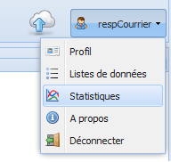
- Depuis l'url suivante : http://{SERVEUR}/stats.
Aperçu de Kibana¶
Introduction¶
Lorsque vous accédez à Blue Stats, Kibana vous permet d'accéder à la synthèse des derniers logs envoyés à la plate-forme.
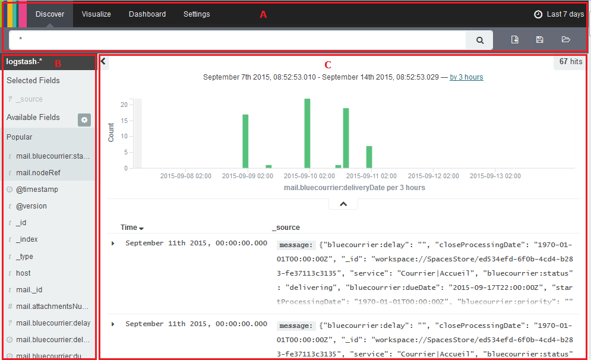
Cet écran se caractérise par les éléments suivants :
- A : Menu de navigation,
- B : Liste des métadonnées extraites,
- C : Synthèse des logs sur la plage de temps sélectionnée.
Menu de navigation¶
Le menu de navigation permet :
- d'accéder aux écrans Discover, Visualize, Dashboard et Settings ;
- de sélectionner une période de temps sur lequel les recherches vont être effectuées ;
- de faire une recherche rapide ;
- de faire une recherche avancée ;
- d'enregistrer une recherche ;
- d'ouvrir une recherche enregistrée.
Liste des métadonnées extraites¶
La liste des métadonnées extraites permet d'effectuer une recherche rapide dans les logs. La partie Synthèse des logs de Kibana se met alors automatiquement à jour.
Synthèse des logs¶
La synthèse des logs affiche par ordre chronologique l'ensemble des logs envoyés par Blue Courrier à Blue Stats. Un graphique indique le flux entrant par jour depuis l'installation de la solution.
Explorer les données¶
Introduction¶
L'écran "Discover" de Kibana permet aux utilisateurs d'explorer toutes les données présentes dans Elasticsearch. Il est possible via cet écran d'exécuter des requêtes sur les données ainsi que de filtrer les résultats retournés par les requêtes saisies.
Créer une requête¶
L'écran discover propose un champ texte dans lequel il est possible de saisir une requête. Les requêtes peuvent prendre plusieurs formes :
- Une recherche texte libre ;
- Un filtre construit sur la valeur d'un ou plusieurs champs à l'aide de l'interface de Kibana ;
- Une recherche utilisant le langage de recherche Lucene.
Lorsqu'une requête est soumise, l'histogramme ainsi que le tableau présentant les résultats sont mis à jour.
Rechercher en texte libre¶
Pour rechercher un texte particulier, procéder comme suit :
- Saisissez le texte à rechercher dans le champs texte situé en haut de l'écran Discover ;
- Validez la requête à l'aide de la touche "Enter" de votre clavier ou de la loupe situé à l'extrémité de la zone de texte.
L'histogramme et le tableau présentant les résultats de la recherche sont mis à jour.
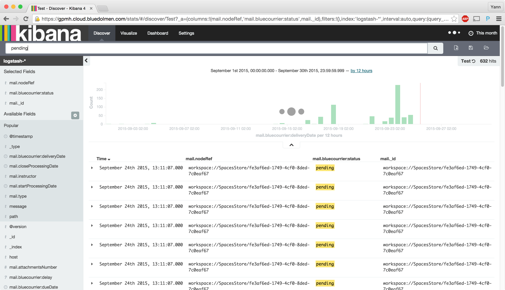
Filtrer sur la valeur d'un champs¶
Si vous souhaitez effectuer une recherche sur une valeur d'un champ en particulier, Kibana propose une interface permettant de se passer des requêtes de type Lucene ou JSON.
Pour cela, dans la colonne de gauche :
- Cliquez sur le nom du champ, une liste présentant les valeurs les plus fréquentes du champs apparaît.
- Cliquez sur une valeur pour filtrer les résultats sur la valeur souhaitée du champ.
Par exemple, pour effectuer une recherche sur les éléments dans l'état pending :
- Cliquez sur le champs mail.bluecourrier:status
- Dans la liste des valeurs, cliquez sur en face du texte pending
Et pour effectuer une recherche sur les éléments n'étant pas dans l'état pending :
- Cliquez sur le champs mail.bluecourrier:status
- Dans la liste des valeurs, cliquez sur en face du texte pending
L'histogramme et le tableau présentant les résultats de la recherche est mis à jour.
Rechercher selon le langage de recherche Lucene¶
Le langage de recherche Lucene est lié au système d'index Lucene, utilisé par de nombreux moteurs de recherche (Alfresco, SolR, Elasticsearch).
La syntaxe de recherche Lucene s'appuie sur le modèle de données utilisé par Lucene et plus particulièrement sur la notion de champ (Field en anglais). Un champ est un élément d'un document indexé par les moteurs de recherche utilisant Lucene. Il est possible d'effectuer une recherche sur un champ à l'aide de la syntaxe suivante : nomduchamp: "valeur recherchée".
Exemple de formalisation pour les recherches précédentes sur le status pending :
- Tous les courriers possédant le statut pending = mail.bluecourrier:status :"pending" ;
- Tous les documents ne possédant pas dans le status pending = NOT mail.bluecourrier:status :"pending".
La syntaxe Lucene comprend un certain nombre d'opérateur :
- AND
- OR
- NOT ...
Pour plus d'informations sur le langage de recherche Lucene : https://lucene.apache.org/core/2_9_4/queryparsersyntax.html
Voir les données des documents¶
Vous pouvez modifier les champs affichés dans le tableau présentant les résultats. Pour cela il faut sélectionner vos champs en cliquant sur add.
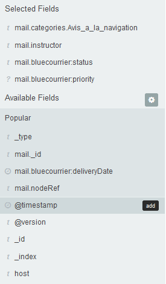
Vous pouvez aussi retirer de votre sélection un champ qui ne convient plus en cliquant sur remove.
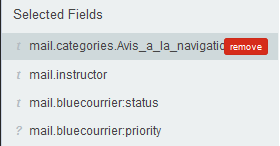
Sauvegarde d'une requête¶
Lorsque votre requête vous convient vous pouvez la renommer et l'enregistrer en cliquant sur save search 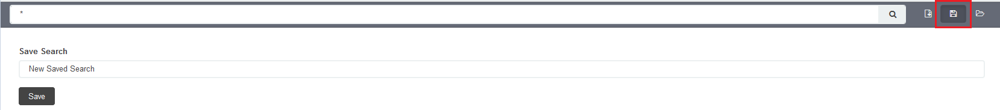.
Visualiser vos données¶
Introduction¶
L'onglet Visualize permet de créer de nouveau graphique et d'accéder rapidement aux graphiques déjà enregistrés.
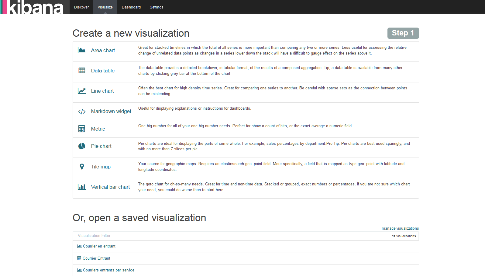
Huit widget sont disponibles pour créer des requêtes et les ajouter à un tableau de bord. Sur ces huit widgets, sept correspondent à des visualisations et le dernier permet de créer une zone de texte dans son tableau de bord. Les requêtes et les visualisations sont indépendantes, cela vous permet de créer plusieurs visualisations pour une même requête et vice-versa. Lors de la sélection d'une visualisation, vous avez le choix entre utiliser une requête déjà existante ou en créer une nouvelle.
Menu de navigation¶
Le menu de navigation de la partie Visualize de Kibana diffère légèrement de celui de la page d'accueil. Vous avez la possibilité :
- d'ajouter un nouvelle élément, par exemple une visualisation ;
- d'enregistrer l'élément que vous venez de créer ;
- d'ouvrir un élément précédemment enregistré ;
mais aussi,
- de partager l'élément ouvert ;
- de rafraîchir la page pour recevoir de nouvelles données.
Créer une visualisation¶
Pour créer une visualisation :
-
Sélectionnez la visualisation souhaitée ;
-
Choisissez une requête existante ou créez-en une ;
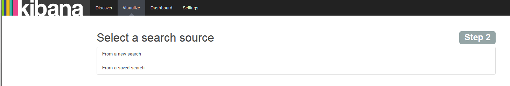
- Configurez la visualisation ;
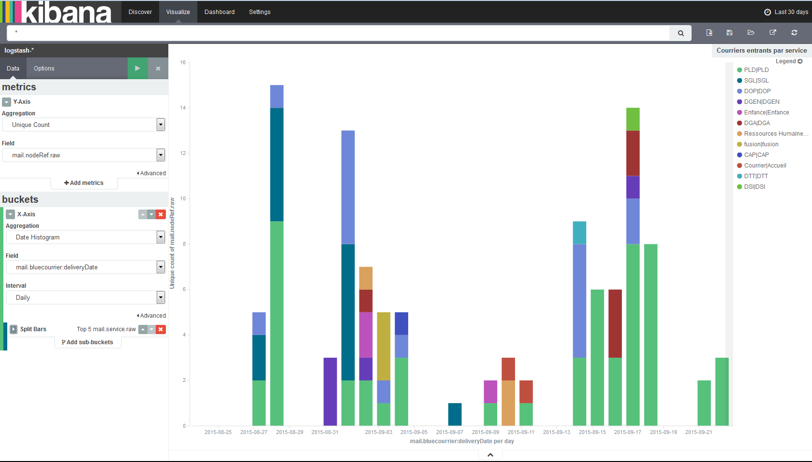
L'écran de création ou de modification d'une visualisation se divise en trois zones :
- le bandeau supérieur, commun à toutes les pages de Kibana ;
- la colonne de gauche, permettant de sélectionner les flux et de les agréger ;
-
la zone de droite, permettant de visualiser la requête.
-
Cliquez sur Enregistrer Un bandeau apparaît vous permettant de renommer votre visualisation pour mieux la retrouver. Votre visualisation est maintenant enregistrée et peut être ajoutée à un tableau de bord.
Ajouter une zone de texte¶
La visualisation Markdown widget permet d'ajouter du texte à une tableau de bord et ne se présente pas comme les autres widgets. La colone de gauche, habituellement réservée à la sélection des abscisses et des ordonnées, propose une zone de texte. La partie droite de l'écran conserve son rôle de prévisualisation.
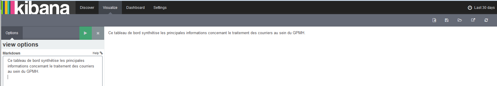
Télécharger les données au format csv¶
La visualisation Data table permet de créer un tableur et de l'ajouter à un tableau de bord. Ce tableur peut être téléchargé au format csv depuis les pages Visualize et Dashboard si le widget a été ajouté à un tableau de bord.
Accéder à ses tableaux de bord¶
Introduction¶
L'onglet Dashboard permet d'accéder aux tableaux de bords enregistrés. Un tableau de bord est un regroupement de visualisation précédemment enregistrées.
Menu de navigation¶
Le menu de navigation de la partie Dashboard de Kibana possède les mêmes fonctionnalités que celui de la partie Visualization. Vous avez la possibilité ici :
- d'ajouter un nouvelle élément, ici un tableau de bord ;
- d'enregistrer l'élément que vous venez de créer ;
- d'ouvrir un élément précédemment enregistré ;
mais aussi,
- de partager l'élément ouvert ;
- de rafraîchir la page pour recevoir de nouvelles données.
Ouvrir un tableau de bord¶
Pour ouvrir un tableau de bord précis, procédez comme suit :
- Depuis la page Dashboard, cliquez sur l'icône load saved dashboard ;
- Sélectionnez le tableau de bord souhaité.
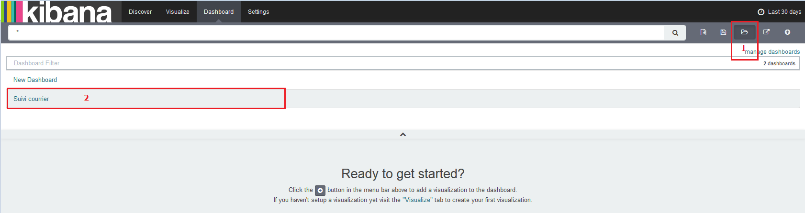
Le tableau de bord s'ouvre alors.
Créer un tableau de bord¶
Pour créer un tableau de bord, procédez comme suit :
- Depuis la page Dashboard, cliquez sur l'icône add visualization au centre de la page et à droite du moteur de recherche,
- Sélectionnez la visualisation souhaitée,
- Ajoutez autant de visualisation, les positionner par glisser-déposer,
- Enregistrez votre tableau de bord en cliquant sur save dashboard.
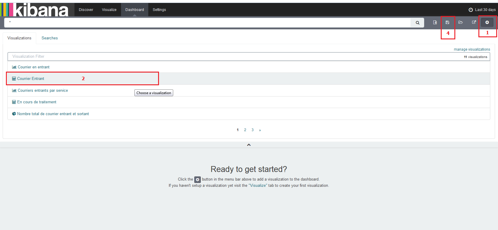
Votre nouveau tableau de bord est accessible et peut être partagé.
Modifier les paramètres de Kibana¶
Introduction¶
Cet écran est réservé à des utilisations techniques. Il permet de définir et configurer différentes propriétés techniques de Kibana. Il offre également un accès aux fonctions d'import et d'export proposées par Kibana.
Il permet d'accéder aux écrans suivants :
- Indices ;
- Advanced ;
- Objects ;
- About.
Indices¶
Cette page permet de définir et modifier les définitions d'index utilisées par Kibana. Lorsqu'aucun index n'est configuré Kibana affiche cette page et propose de créer un index à partir des données présentes.
Une fois l'index en place, il est possible d'accéder au détail des différents champs présents dans l'index mis en place, mais également de modifier la configuration de chacun de ces champs.
Advanced¶
L'onglet Advanced permet de modifier certaines configurations par défaut de Kibana. Il est par exemple possible de spécifier :
- des options pour Lucene ;
- des options utilisé lors de l'export CSV ;
- des options d'affichages de Kibana.
Objects¶
L'onglet Objects permet d'accéder aux éléments ayant été sauvegardé dans Kibana. On y retrouve l'ensemble des tableaux de bord, visualisations et requêtes ayant été sauvegardés lors de l'utilisation de Kibana.
L'écran permet également d'accéder à chacun de ces éléments afin de les modifier et de les supprimer.
Enfin l'onglet Objects propose des boutons permettant d'exporter et d'importer les configurations des éléments de Kibana (Tableau de bord, Visualisation ...).
About¶
L'onglet About permet d'accéder à l'écran "A propos" de Kibana. Cet écran présente la version de Kibana utilisé.
Pour vider les données contenus dans ELK, il faut envoyé une requête HTTP de type « DELETE » à l’adresse suivante : http://vm-courrier-stats:9200/statistics/mail.
Cette manipulation peut être effectuée à l’aide de l’outil curl disponible sur les système de type unix (curl -XDELETE http://vm-courrier-stats:9200/statistics/mail). Depuis un système windows, il existe des extensions comme Poster (pour Chrome) qui permettent ce genre de manipulation.
Cette manipulation a pour conséquence de supprimer le type de donnée « mail » correspondants aux courriers stockés dans Blue Courrier.
Les informations suivantes sont envoyées à Kibana par Blue Courrier
- La date de création : cm:created,
- La date d'arrivée : bluecourrier:deliveryDate,
- La date d'échéance : bluecourrier:dueDate,
- La date de début de traitement : startProcessingDate,
- La date de fin de traitement : closeProcessingDate,
- La nature du courrier (entrant ou sortant) : type,
- les courriers entrants sont labélisés incoming,
- les courriers sortants sont labélisés outgoing,
- L'instructeur : instructor,
- Le processus du courrier : processKind,
- les PDR sont labellisés ep,
- les PSU sont labellisés fu,
- les PI sont labellisés ro,
- L'emplacement du courrier dans le processus de traitement : bluecourrier:status,
- en attente de traitement : pending,
- en cours de traitement : processing,
- distribution en attente de validation : validating!delivery,
- traité : processed,
- envoyé : delivering,
- Le service stockant le courrier : service,
- Le nombre de pièce-jointe : attachmentsNumber,
-
La catégorie du courrier : categories,
-
La référence Alfresco du courrier : nodeRef.
Kibana produit aussi ses propres indicateurs :
- La nature du document : _type,
- L'index de référence : _index,
- L'identifiant de Kibana : _id.